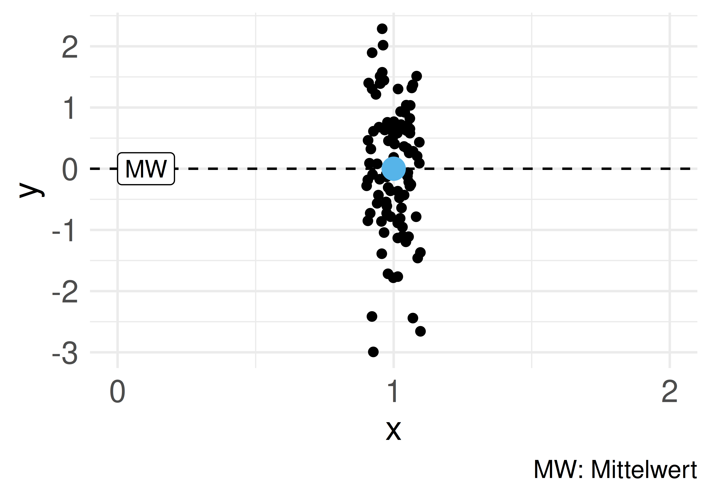
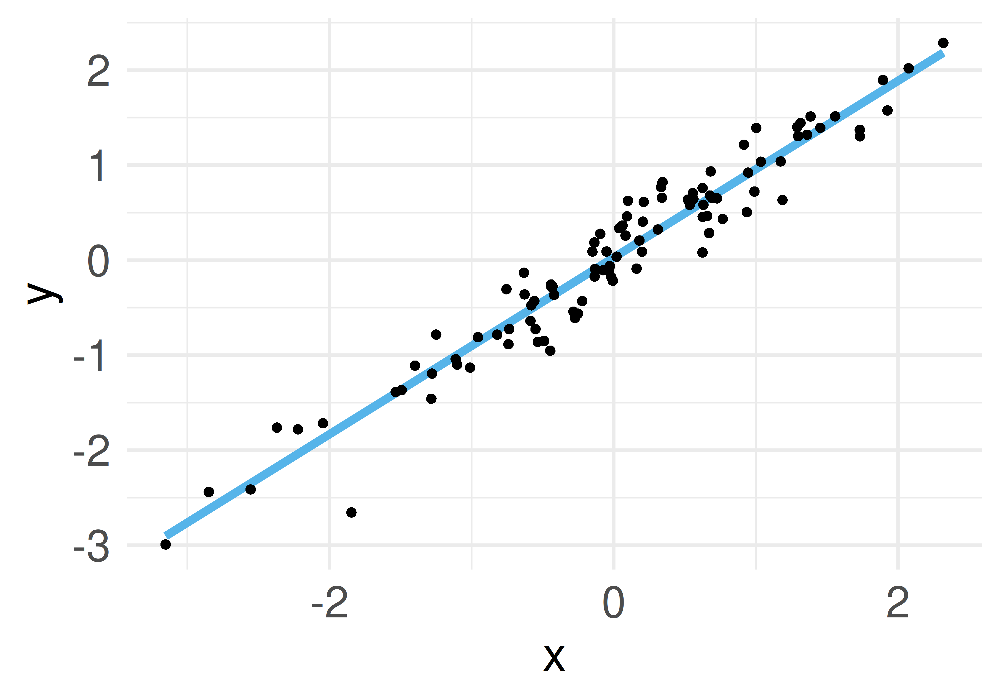
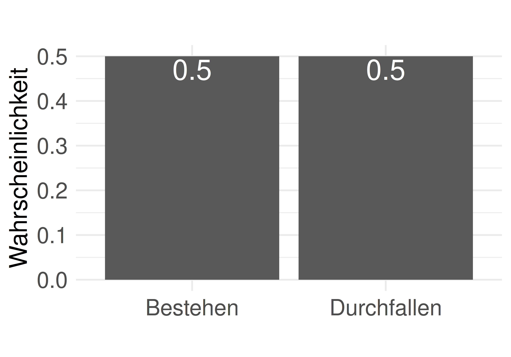
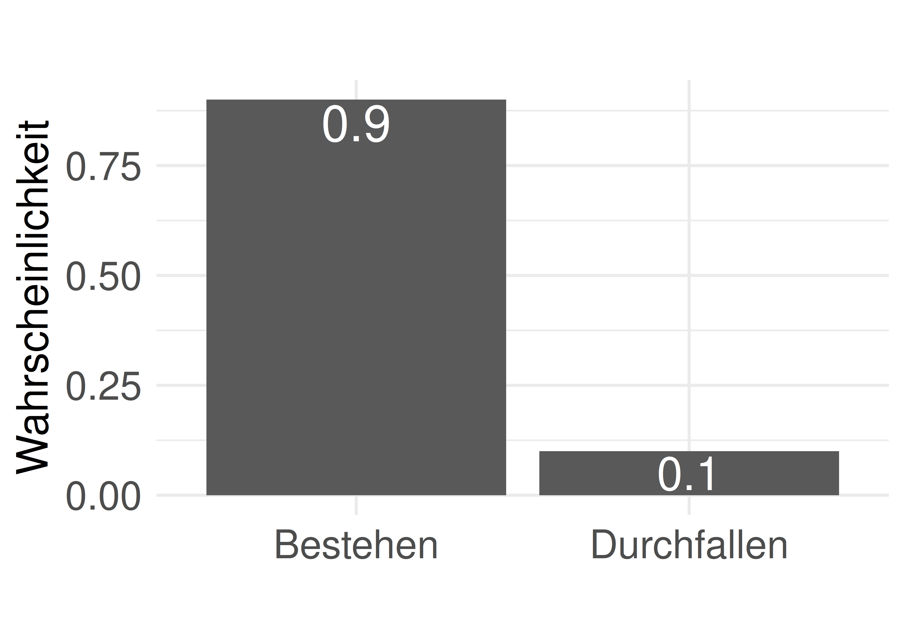

flowchart TD
subgraph Lehrkraft
F["🔥"]
end
subgraph A[Mitarbeit]
C["🪵"]
end
subgraph E[Eigenstudium]
D["🌳"]
end
Statistik1
Rahmen
Sebastian Sauer
Einstieg
Lernziele
- Sie können eine Definition von Statistik wiedergeben.
- Sie können eine Definition von Daten wiedergeben.
- Sie können den Begriff Tidy-Daten erläutern.
- Sie können Beispiele für verschiedene Skalenniveaus nennen.
Einstieg
Datenanalyse als Fließband

Schritt für Schritt, in der richtigen Reihenfolge, vom Anfang bis Ende, erarbeiten wir unser “Datenprodukt”.
Einstieg
Ihr Erfolgsrezept
Eine gute Lehrkraft ist der Funke. Ihre Mitarbeit im Unterricht ist das Brennmaterial. Ihr Eigenstudium hält das Feuer am Leben.
Einstieg
Was ist Statistik und wozu ist sie gut?
Definition: Statistik
Definition: Statistik
Statistik fasst Werte zusammen, quantifiziert deren Unterschiedlichkeit und beschreibt die Ungewissheit unserer Schlüsse (Kaplan, 2009; Poldrack, 2023).
In diesem Buch werden Statistik, Datenanalyse und Data Science synonym verwendet.
Drei Bestimmungsstücke:
- Daten zusammenfassen
- Unterschiedlichkeit quantifizieren
- Ungewissheit beschreiben
Was ist Statistik und wozu ist sie gut?
Daten zusammenfassen


Eine Menge von Zahlen wird zu einer einzelnen Zahl “zusammengedampft” — leichter zu verstehen als viele Einzelwerte.
Was ist Statistik und wozu ist sie gut?
Unterschiedlichkeit quantifizieren
{kind=link}
Zentrale Idee: die Variation der Dinge präzise beschreiben.
Was ist Statistik und wozu ist sie gut?
Definition: Residuum
Definition: Residuum
Das Residuum des Merkmals \(X\) der \(i\)-ten Beobachtung ist die Differenz vom Wert \(x_i\) und einem Referenzwert, etwa dem Mittelwert (\(\bar{x}\)): \(r_i = x_i - \bar{x}\).
Was ist Statistik und wozu ist sie gut?
Ungewissheit beschreiben: Anna & Berta


Anna hat keine Ahnung, ob sie die Klausur bestanden hat. Berta ist sich sehr sicher. Beide unterscheiden sich in ihrer Ungewissheit.
Was ist Statistik und wozu ist sie gut?
Ungewissheit beschreiben: Der zwielichtige Statistiker
Ein Statistiker wirft eine Münze 10 Mal; bei Kopf gewinnt er. Er gewinnt 8 von 10 Mal.
- Sie sind sich ziemlich sicher, dass er Sie über den Tisch gezogen hat — aber nicht ganz sicher.
- Der Statistiker ist sich ganz sicher: Er weiß, dass seine Münze gezinkt ist.
Was ist Statistik und wozu ist sie gut?
Was ist das Ziel Ihrer Analyse?
Arten von Zielen
graph TD
subgraph Ziele
A[beschreiben]
B[vorhersagen]
C[erklären]
end
Was ist das Ziel Ihrer Analyse?
Beispiele für Zielarten
- Beschreiben: Wie groß ist der Gender-Paygap in der Branche X im Zeitraum Y?
- Vorhersagen: Wenn ich 100 Stunden lerne, welche Note kann ich erwarten?
- Erklären: Wie viel bringt mir das Lernen für die Klausur?
Was ist das Ziel Ihrer Analyse?
Forschungsfrage
Die Leitfrage Ihrer Analyse: Was wollen Sie herausfinden? Häufig: “Hat X einen (kausalen) Einfluss auf Y?”
graph LR
I[Input bzw. X] --> O[Output bzw. Y]
Was ist das Ziel Ihrer Analyse?
Beispiele für Forschungsfragen
Hat Lernen (X) einen Einfluss auf den Prüfungserfolg (Y)?
Verringert Joggen (X) die Menge des Hüftgolds (Y)?
Um welchen Betrag erhöht sich der Umsatz (Y), wenn wir 1000 Euro mehr für Werbung ausgeben (X)?
Verringert intensive Handynutzung (X) die Konzentrationsfähigkeit (Y)?
Was ist das Ziel Ihrer Analyse?
Aus der Forschung: Smartphone-Brain-Drain
{kind=link}
Ward et al. (2017): Die bloße Gegenwart eines Handys reduziert die verfügbare kognitive Kapazität — selbst wenn es nur auf dem Tisch liegt.
Was ist das Ziel Ihrer Analyse?
Der Prozess der Datenanalyse: PPDAC
graph LR
Problem --> Plan --> Data --> Analysis --> Conclusions --> Problem
- Problem: Problem, Ziel und Sachgegenstand verstehen
- Plan: Vorgehen planen
- Data: Daten erheben und aufbereiten
- Analysis: Daten analysieren
- Conclusions: Schlussfolgerungen ziehen (MacKay & Oldford, 2000)
Was ist das Ziel Ihrer Analyse?
Die sieben Schritte der Datenanalyse
flowchart LR
subgraph R[Rahmen]
direction LR
subgraph V[Vorbereiten]
direction TB
E[Einlesen] --> Um[Umformen]
end
subgraph M[Grundlagen des Modellieren]
direction TB
M1[Punktmodelle] --> Vis[Verbildlichen]
Vis --> U[Ungewissheit]
end
subgraph N[Modellieren]
direction TB
G1[Modelle] --> G2[Ungewissheit]
end
V --> M
M --> N
end
Was ist das Ziel Ihrer Analyse?
Was sind Daten?
Definition: Daten
Definition: Daten
Daten sind eine geordnete Folge von Zeichen.
Was sind Daten?
Daten als Tabelle
| id | name | note |
|---|---|---|
| 1 | Anna | 1.3 |
| 2 | Berta | 2.3 |
| 3 | Carla | 3 |
Die erste Spalte id ist nur eine laufende Nummer zur Identifikation der Beobachtungen — sie birgt sonst keine Information (vgl. Matrikelnummer, Personalausweisnummer, Bestellnummer).
Was sind Daten?
Beispiel: Der Datensatz mariokart
Forschungsfrage: Welche Produktmerkmale stehen mit einem hohen Verkaufserlös in Zusammenhang?
Ausschnitt der Variablen: n_bids, start_pr, total_pr, wheels — Auktionsdaten zur Spielekonsole Wii / dem Spiel Mariokart.
Was sind Daten?
Variable & Beobachtungseinheit
Definition: Variable
Eine Variable ist ein Platzhalter für ein Merkmal, das verschiedene Ausprägungen annehmen kann.
Definition: Beobachtungseinheit
Beobachtungseinheiten sind die Dinge, die wir untersuchen (beobachten). Sie sind die Träger von Variablen.
{kind=link}
Was sind Daten?
Wert & Ausprägung
Definition: Wert
Ein Wert ist der Inhalt einer Variablen.
Definition: Ausprägung
Als Ausprägungen bezeichnet man die verschiedenen Werte einer Variablen.
Beispiel: Die Variable geschlecht bei zehn Probanden enthält die Ausprägungen: divers, Frau, Mann.
Was sind Daten?
Tidy Data
Definition: Tidy Data
Eine Tabelle, in der jede Zeile eine Beobachtungseinheit darstellt, jede Spalte eine Variable und jede Zelle einen Wert.

Was sind Daten?
Warum Tidy Data?

Man weiß, wie die Daten aufgebaut sind — und Statistikprogramme kommen mit diesem Format am besten zurecht.
Was sind Daten?
Beispiel: Breit- vs. Langformat
Breitformat (nicht tidy)
| Produkt | 2021 | 2022 | 2023 |
|---|---|---|---|
| Hämmer | 10 | 11 | 12 |
| Nägel | 15 | 10 | 5 |
Langformat (tidy)
| Produkt | Jahr | Umsatz |
|---|---|---|
| Hämmer | 2021 | 10 |
| Hämmer | 2022 | 11 |
| … | … | … |
Was sind Daten?
Visualisierung dank Tidy Data
{kind=link}
Ohne Tidy-Daten wäre dieses Diagramm nicht so einfach zu erstellen.
Was sind Daten?
Je mehr, desto besser (?)
“Viel hilft viel” — aber nur unter sonst gleichen Umständen. Viel Datenmüll ist nicht besser als ein paar knappe, wasserdichte Fakten!
Wichtig
Mehr Daten = genauere Ergebnisse (unter sonst gleichen Umständen)
Was sind Daten?
Stichprobengröße und Genauigkeit
{kind=link}
Kleine Stichproben (\(n=20\)) streuen stärker um den wahren Mittelwert als große Stichproben (\(n=200\)).
Was sind Daten?
Arten von Variablen
Nach Position in der Forschungsfrage
Hat Lernen einen Einfluss auf den Prüfungserfolg?
graph LR
X["Lernen<br>(UV, X, Prädiktor)"] --> Y["gute Note<br>(AV, Y, Kriterium)"]
Lernen ist die Input-Variable (X, Ursache, UV). Prüfungserfolg ist die Output-Variable (Y, Wirkung, AV).
Arten von Variablen
Definition: Skalenniveau
Definition: Skalenniveau
Der Begriff bezeichnet Art und Menge der Information in Variablen — basierend auf den Eigenschaften der Daten und den mathematischen Operationen, die sinnvoll darauf angewendet werden können.
graph TD
Variablen --> qualitativ
Variablen --> quantitativ
qualitativ --> nominal
qualitativ --> ordinal
quantitativ --> Intervallniveau
quantitativ --> Verhältnisniveau
Arten von Variablen
Beispiele für Skalenniveaus
| Variable | Skalenniveau |
|---|---|
| Haarfarbe, Augenfarbe, Geschlecht, Automarke, Partei | Nominalskala |
| Lieblingsessen, Medaillen, Uniranking | Ordinalskala |
| IQ, Extraversion, Temperatur (°C/°F) | Intervallskala |
| Temperatur (Kelvin), Körpergröße, Geschwindigkeit, Länge | Verhältnisskala |
Arten von Variablen
Erlaubte Rechenoperationen
| Skalenniveau | Quantitativ | \(=\) | \(\preceq\) | \(+\) | \(\times\) |
|---|---|---|---|---|---|
| Nominalniveau | nein | ✅ | ❌ | ❌ | ❌ |
| Ordinalniveau | nein | ✅ | ✅ | ❌ | ❌ |
| Intervallniveau | ja | ✅ | ✅ | ✅ | ❌ |
| Verhältnisniveau | ja | ✅ | ✅ | ✅ | ✅ |
Arten von Variablen
Nominal- & Ordinalskala
Nominalskala (z. B. Geschlecht): Nur Gleichheit prüfbar. 👩 ≠ 👨, 👩 = 👩. Codierung (1 = Frau, 2 = Mann) darf nicht verrechnet werden!
Ordinalskala (z. B. Leibgerichte): Objekte lassen sich ordnen (🍕 ≻ 🍝 ≻ 🥩), aber die Abstände zwischen den Rängen sind nicht quantifizierbar.
Arten von Variablen
Intervall- & Verhältnisskala
Intervallskala (z. B. Celsius): Der Nullpunkt ist willkürlich (nicht physikalisch). Addieren/Subtrahieren ist erlaubt, aber nicht “doppelt so warm”.
{kind=link}
Verhältnisskala (z. B. Länge, Kelvin): Alle Rechenoperationen erlaubt, inklusive Verhältnisbildung.
Arten von Variablen
Modelle
Definition: Modelle
Definition: Modelle
Modelle sind ein vereinfachtes Abbild der Realität, eine Repräsentation (Kaplan, 2009).
{kind=link}
Modelle
Beispiele für Modelle
Puppen sind Modelle für Babys, Landkarten für Landstriche, das Bohrsche Atommodell für Atome.
Prof. Weiss-Ois hat 29 Lernzeiten vor sich und blickt nicht durch — bis man ihm ein Modell gibt: den Mittelwert, 9,6 Stunden. Jetzt weiß er, wie viel seine Studierenden typischerweise lernen.
Modelle
Wozu Modelle?
Modelle vereinfachen komplexe Sachverhalte und machen sie dem Verständnis zugänglich. In der Statistik fassen Modelle oft viele Daten prägnant zusammen, z. B. zu einer einzelnen Kennzahl.
Das Verrückte: Man wirft Informationen weg, um eine (hoffentlich nützlichere) Information zu bekommen (Stigler, 2016). Weniger ist mehr?!
Modelle
Praxisbezug
Daten im Berufsleben
Wir leben im Datenzeitalter — Daten durchdringen alle Bereiche des beruflichen, gesellschaftlichen und privaten Lebens.
Egal ob man Daten als Segen oder Fluch betrachtet: Mit Daten umgehen zu können, wird immer wichtiger. Datenanalyse gehört zu den stark nachgefragten Jobs.
Praxisbezug
Wie man mit Statistik lügt
Das File-Drawer-Problem
Von 20 untersuchten Variablen zeigt nur 1 einen interessanten Effekt. Die Versuchung: die anderen 19 in der Schublade verschwinden lassen und nur den einen schönen Befund präsentieren.
Wer missliebige Ergebnisse verschweigt, erzeugt ein verzerrtes Bild der Ergebnislage — man spricht von Publikationsbias (Marks-Anglin, Arielle and Chen, Yong, 2020; Rothstein, 2014). Ein Fall von wissenschaftlichem Fehlverhalten.
Wie man mit Statistik lügt
Zusammenfassung
- Statistik: Daten zusammenfassen, Unterschiedlichkeit quantifizieren, Ungewissheit beschreiben
- Drei Ziele der Analyse: beschreiben, vorhersagen, erklären
- Daten: geordnete Folge von Zeichen — im Tidy-Format am besten nutzbar
- Variablen: Position (UV/AV) und Skalenniveau (nominal, ordinal, Intervall, Verhältnis)
- Modelle: vereinfachte Repräsentationen der Realität
Literaturhinweise
Referenzen
Çetinkaya-Runde, M., & Hardin, J. (2021). Introduction to Modern Statistics. https://openintro-ims.netlify.app/
Downey, A. (2023). Probably Overthinking It: How to Use Data to Answer Questions, Avoid Statistical Traps, and Make Better Decisions. The University of Chicago Press.
Horst, A. (2023). Tidy Data [Artwork]. https://allisonhorst.com/
Horst, A. (2024). Statistics Artwork [Artwork]. https://allisonhorst.com/
Kaplan, D. T. (2009). Statistical Modeling: A Fresh Approach. CreateSpace. https://dtkaplan.github.io/SM2-bookdown/
MacKay, R. J., & Oldford, R. W. (2000). Scientific Method, Statistical Method and the Speed of Light. Statistical Science, 15(3), 254–278. https://doi.org/10.1214/ss/1009212817
Marks-Anglin, Arielle and Chen, Yong. (2020). A Historical Review of Publication Bias. Research Synthesis Methods, 11(6), 725–742. https://doi.org/10.1002/jrsm.1452
Poldrack, R. A. (2023). Statistical Thinking: Analyzing Data in an Uncertain World. Princeton University Press. https://statsthinking21.github.io/statsthinking21-core-site/
Rothstein, H. R. (2014). Publication Bias. In Wiley StatsRef: Statistics Reference Online. John Wiley. https://doi.org/10.1002/9781118445112.stat07071
Spurzem, L. (2017). VW 1303 von Wiking in 1:87. https://de.wikipedia.org/wiki/Modellautomobil#/media/File:Wiking-Modell_VW_1303_(um_1975).JPG
.JPG){kind=link}
Stigler, S. M. (2016). The Seven Pillars of Statistical Wisdom. Harvard University Press.
Ward, A. F., Duke, K., Gneezy, A., & Bos, M. W. (2017). Brain Drain: The Mere Presence of One’s Own Smartphone Reduces Available Cognitive Capacity. Journal of the Association for Consumer Research, 2(2), 140–154. https://doi.org/10.1086/691462
Wickham, H. (2023). Tidy-Data-Sinnbild [Artwork]. https://r4ds.hadley.nz/data-tidy#fig-tidy-structure

Statistik1 — Rahmen